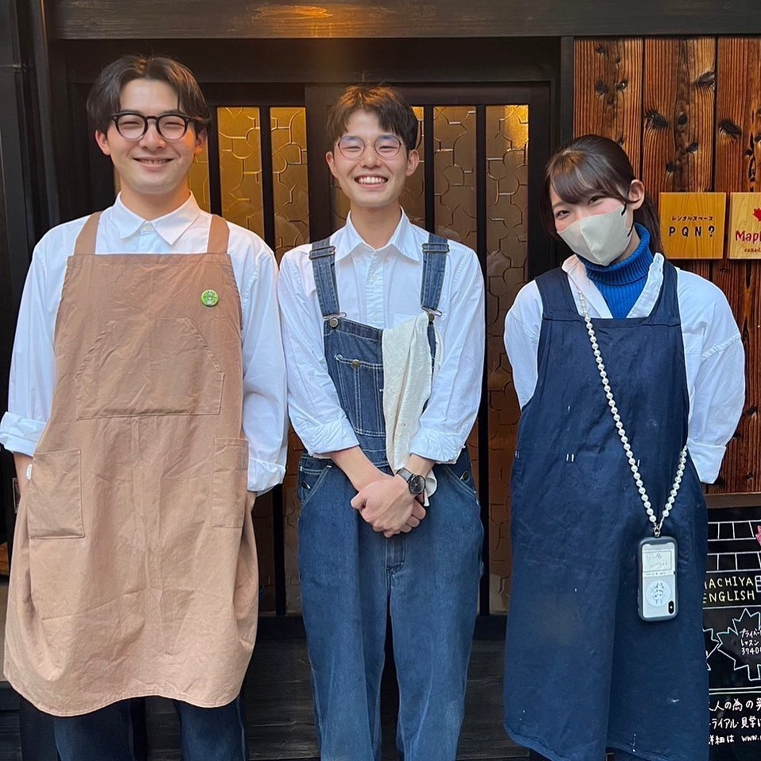

喫茶けけけの営業、無事終了いたしました
第2回営業（2023年9月、京都）の御礼です。
Instagramでは流れていく長文と写真を、読みものとして残す場所です。新しい順に並んでいます。
第2回営業（2023年9月、京都）の御礼です。

第1回営業（2022年12月）の御礼を、店主・川上が書きました。

第1回営業の前に、店主・川上が考えていたことです。

YouTubeで配信しているラジオのご紹介です。
「仕込みと試作」カテゴリの記事（台湾調査と滷肉飯、珈琲豆の選定、お菓子の試作など）は、順次公開予定です。